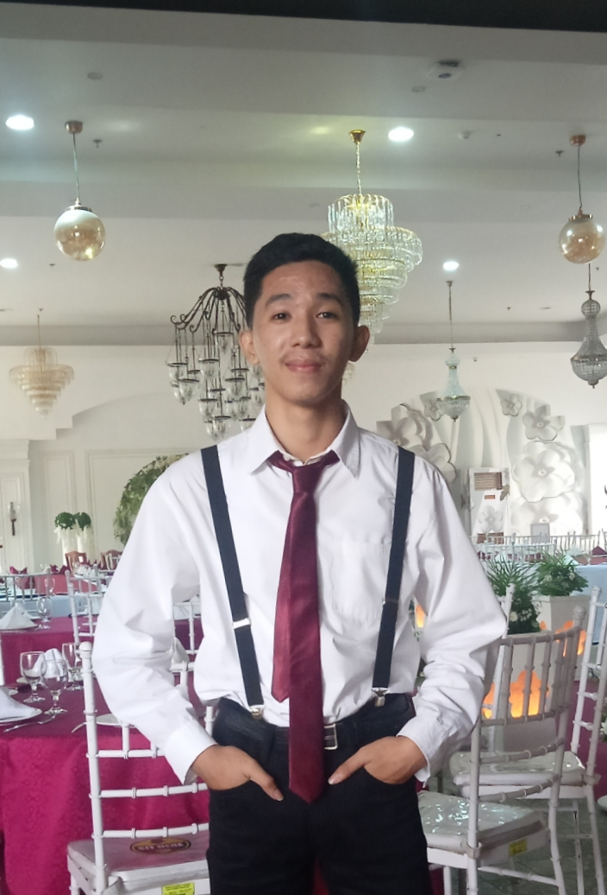

About Me
Birthdate:
April 6, 2002
Birthplace:
Tagbilaran City, Bohol
Citizenship: Filipino
Sex: Male
Father's Name:
Reynaldo D. Reyes
Mother's Name:
Maria Fe L. Reyes
Contact
+63 907 910 3376
earfvedro462@gmail.com
Purok 7-Butong
Cambuac Sur, Sikatuna, Bohol
Education
2013 - 2014Cambuac Elementary School
2019 - 2020Sikatuna National
High School (GAS)
Bohol Island State University-Balilihan Campus (BSIT)
Peter Rey L. Reyes
Don't quit. God is up to something big.
Experience
2020
Work Immerssion
Municipality of Sikatuna
Skills
Java
HTML
Editor
CSS
Interests
- Gaming
- Traveling
- Movies
- Music